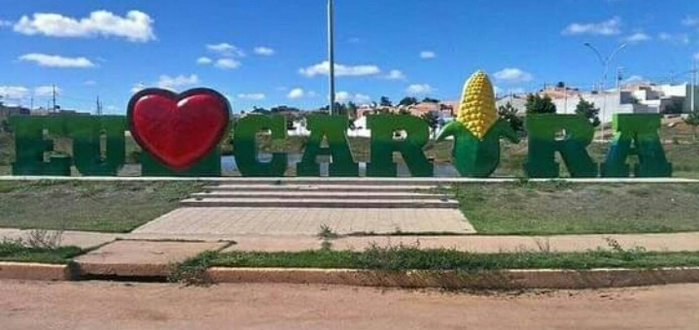

Carira
História
Na primeira metade do século XIX, o território que compreende Carira pertencia às Matas de Itabaiana e localizava-se na fronteira com Jeremoabo/BA, no trecho onde hoje localizam-se os municípios baianos de Coronel João Sá e Pedro Alexandre. A partir de 1850, a região próxima ao Rio do Peixe, afluente esquerdo do Vaza Barris, conheceu um certo aumento populacional. Nessa região viviam os Dantas, família influente na política do sertão baiano.
Os Dantas trouxeram para estas terras, o vaqueiro João Martins de Souza com os primeiros povoadores, que partiram das margens do Rio do Peixe, imediações de Bom Conselho (atual Cícero Dantas/BA). Deve-se a João Martins o início do povoamento da região, que passou a ser conhecida mais tarde como Mãe Carira. Essa toponímia homenageia uma índia que chefiava uma tribo localizada entre o Tanque do Carira e Saco Torto.
Da aldeia de mãe Carira, a uma distância de dois quilômetros para o leste, João Martins edificou a primeira casa, em 1865. Em seguida, foram construídas as residências dos seus filhos Joaquim e Gonçalo. A história de Mãe Carira confunde-se com a história do município. Segundo registros históricos, os moradores de Barra Larga (hoje, pertencente a Coronel João Sá/BA), fizeram uma grande roça de milho no território indígena. Os índios, sempre enxotados para mais distante de seu primitivo habitat, e se vendo sem suas terras para plantar, começaram a desfrutar secretamente da referida plantação. Os novatos ocupantes daquelas terras, notando os constantes desfalques, começaram a tocaiá-los. Mas, sem êxito, resolveram fazer um acampamento escondido no roçado.
Em 25 de novembro de 1865, os nativos, como de costume, foram buscar algumas espigas, e a velha cacique estava com eles. Quando cuidavam de colher as espigas, os donos do roçado incitaram cães ferozes sobre os índios, que fugiram em debandada. Os mais jovens conseguiram escapar, mesmo muito feridos. Foi terrível o corre-corre entre a caatinga cheia de plantas espinhentas, como macambira, mandacaru e outros. Mãe Carira, a mais velha da tribo, ferida e perdendo muito sangue, por causa das mordidas dos cães, caiu pesadamente próximo a um pé de Jequiri, ao lado da casa de João Martins. E foi naquele local que os cães a atacaram. O vaqueiro acudiu a índia, mas em consequência dos ferimentos, ela veio a falecer em alguns dias. A chefe da tribo foi sepultada por João Martins, no lugar em que tombou. Sobre sua cova, ele afixou um cruzeiro.
Durante a guerra do Paraguai (1864 – 1870), muitos homens, para não serem recrutados, vieram se esconder nas terras desabitadas de mãe Carira. Já em 1870, à sombra do jequiri, ao lado da sua casa, João Martins iniciou aos domingos uma pequena feira que foi atraindo pessoas para o lugar nascente. Cinco anos depois, Mãe Carira possuía um razoável número de habitantes e João Martins ergueu uma casinha de oração em volta da cova da Índia (onde hoje é a praça Martinho de Souza). Ali se reuniam os fiéis, com o cemitério ao lado. No início do século XX, o povoado passou a ser chamado apenas de Carira.
Aos 25 dias do mês de novembro de 1953, oitenta e oito anos após a morte de Mãe Carira, atingimos nossa almejada autonomia, com a elevação de Carira, pela Lei Estadual n.º 525A, a cidade e sede do Município de mesmo nome, com território desmembrado do Município de Frei Paulo. A primeira eleição foi em 3 de outubro de 1954 e a 6 de fevereiro de 1955, Carira foi elevada a Município autônomo, tendo como primeiro prefeito eleito Olímpio Rabelo de Morais.
fonte: https://www.carira.se.gov.br/Pontos Turísticos
Praça Olimpio Rabelo
Os principais pontos turísticos são a Praça Olímpio Rabelo, a Praça José Durval Matos, o Memorial de arte, o BNB Clube e o Balneário Divisa . Além desses, o turista e o povo contam com uma deliciosa gastronomia que está representada pelos pratos típicos locais: feijoada, buchada de carneiro ou fatada, sarapatel de porco ou carneiro, mugunzá, arroz doce e o famoso pirão de galinha caipira.
Balneário Divisa
O balneário é um dos maiores pontos de diversão das famílias de Carira, por possuir piscinas, restaurantes, quisques e área para crianças.
Dados Gerais de acordo com o IBGE
| Prefeito (a) | Diogo Menezes Machado |
| Vice-Prefeito (a) | Valmir Das Topique |
| Site do município | https://www.carira.se.gov.br/ |
| Área territorial | 636,404 km² |
| População estimada | 22.393 pessoas |
| Densidade demográfica | 35,2 hab./km² |
| IDHM | 0,588 |
| PIB per capita | 8.551,36 |